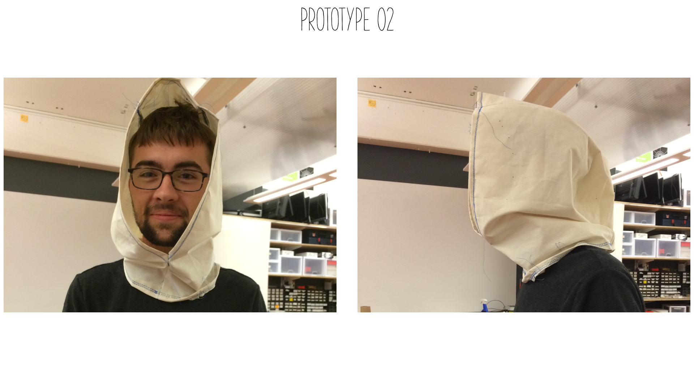

Enable heirlooms to act as vessels for memories that connect generations.
RESEARCH
Memory is a tricky thing. It is fragile, robust, and meaningful. We often lack appreciation of memories in the moment, only to find them important in the years ahead. These reasons are part of what motivated me to examine how we could use a garment to expand and share our memory. The process for this project was heavily inspired by the relationship that I have with my grandparents who used to live in California where I currently reside. I realized I knew very little about when they lived here and what they did. When I started exploring memory, I immediately recalled a talk that I heard from Wilson Miner from the Build 2011 conference in which he discusses objects being vessels for memory.
As I researched the meaning behind objects, curiosity was sparked in the relationship between heirlooms and totems. These are often the names we give to belongings that are more meaningful to us than everyday objects. They are the things that we keep near and the things that help us remember.
There is a special relationship in how we interact with these objects. Some we keep safely locked away, some we cannot help but hold near, and often they help us to share stories of the past with others.
DESIGN PRINCIPLES
Warmth - The final form should convey the feeling of snuggling up with a good book next to a warm fire.
Safe and Secure - The garment should create a safe-feeling user environment.
Intimate - The experience should enable a level of intimacy in order to allow the wearer to reflect on personal moments without judgement.
Handmade - The craft behind the garment should have a story, both to act as a starting point for the keeping of memories but also to showcase the handmade craft that adds character to an object.
Personal - The garment should act as a totem, something that holds particular meaning to that individual and something that he or she feels can be passed along to other specific individuals, but not just anybody.
PROTOTYPES
 One of the first concepts combined audio recording with geo location by embedding them both into a scarf. This scarf could be switched between modes. The modes include a record mode or explore mode.
One of the first concepts combined audio recording with geo location by embedding them both into a scarf. This scarf could be switched between modes. The modes include a record mode or explore mode.

The second iteration focused on a scarf-hoodie combination in which the same two modes would exist and would be linked to the hood being up and the hood being down. The shift in form was primarily due to trying to amplify the feeling of warmth and intimacy by creating an environment which allowed you to feel semi-isolated anywhere.

After testing both variations of the muslin prototypes and interviewing individuals on the surrounding eco-systems, I determined that the ability to record based on location did not need to be combined; rather, the functions should be able to work independently of one another. Although the ability to receive information based on a specific location still interests me, my focus shifted to honing the experience between recording and playing back audio. This way the focus can be drawn to the meaning behind the content.
NEXT STEPS
Explore possibility for a surrounding ecosystem.
Consider what other forms of technology could be used more subtly and effectively.
Try varying the triggering mechanisms for recording and playing back.
Conduct additional user testing to determine best methods for interacting with content beyond sound.
CREDITS
For: IXDSN-350-01 | Wearables and Soft Materials
Project Date: Fall 2014
Project Length: 2 Months